Constructing flanges
You can construct flanges on sheet metal parts using the Flange command, the Multi-Edge Flange command, the Contour Flange command, and the Bend command.
Constructing flanges in the ordered environment
In the ordered environment, use the Flange command to construct a flange by extruding material that represents the face of the flange.
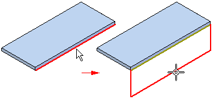
Use the Multi-Edge Flange command to construct flange(s) by extruding material that represents the face of the flange(s).
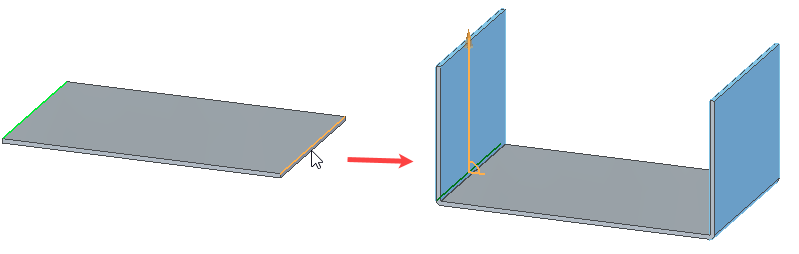
Constructing flanges in the synchronous environment
In the synchronous environment, you can construct a flange by selecting a linear thickness edge to display the flange start handle,

clicking the flange start handle,
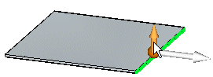
specifying a flange distance,
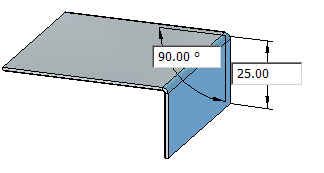
and clicking to place the flange.

When you click, a 90° flange is drawn automatically. However, when specifying the distance for the flange, you can also specify an angle.
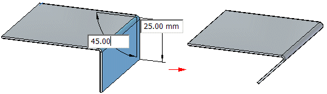
Use the Tab button to switch between the distance and angular value controls.
Editing flange parameters
After you create a flange, you can use the Edit Definition command or the Dynamic Edit command to edit such parameters as the angle,
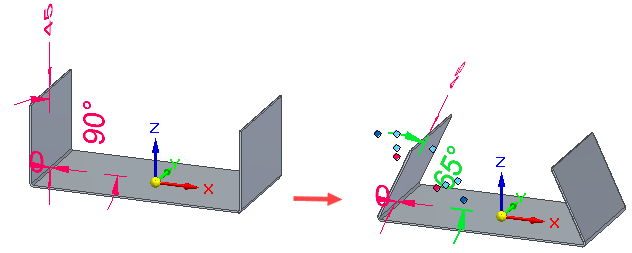
flange width,
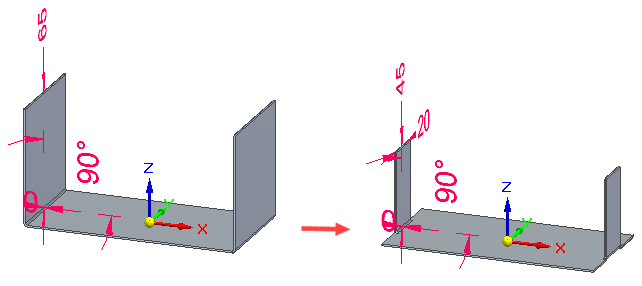
or flange offset.
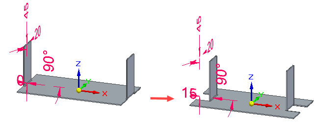
Profiles are not available to edit, so you can only edit the parameters associated with the flange.
Flange width support
If you select a single edge for the flange, all of the width options are available. If you select multiple edges, only the Full Width and Centered options are available. For more information on the width options, see Multi-Edge Flange command bar.
Trimming flanges
You can use the Trim option on the Multi-Edge Flange command bar to limit the length of the flange at or before intersecting with another flange.
|
Trim option cleared |
Trim option selected |
|---|---|
|
|
|


You can use the option to avoid intersection of:
|
Flanges intersecting with existing flanges |
|
|
Adjacent flanges |
|
|
Non-adjacent flanges |
|
|
Coplanar flanges |
|
|
Non-coplanar flanges |
|


You can not trim intersections that include bends of flanges.
Miter support for flanges
You can use the Miter option on the Miter and Corners tab of the Flange Options dialog box to miter flanges created on edges that join at a single point.
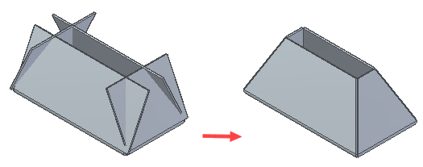
Partial flanges in the synchronous environment
You can also construct flanges that do not extend the full distance of the edge you select. In the synchronous environment, you can use the Partial Flange option on the Flange command bar to create partial flanges.
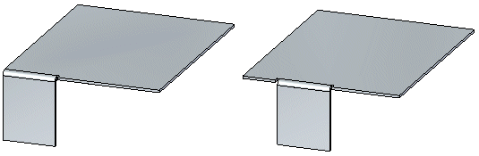
Partial flanges are created along a selected face from the point at which you click (A) to a distance that is one-third (B) of the total length (C) of the selected thickness face.
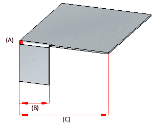
The partial flange uses your first click as the starting edge (A) and is created on the long side (B) of the selected thickness face.
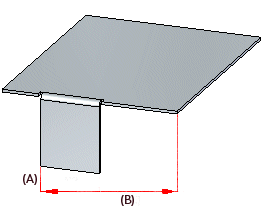
Partial flanges work slightly differently in the ordered environment. After you select the edge from which you want to construct the flange, you can use the options on the command bar to specify one of several types of partial flanges.
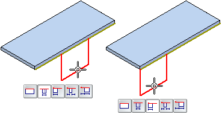
For example, you can use the Centered option to specify a partial flange that is centered on the selected edge. The default flange width is one-third the width of the selected edge. A geometric relationship (A) is automatically placed between the midpoints of the selected edge and the flange profile line. This relationship allows you to edit the flange width dimension (B), but keep the flange centered on the edge.
Offsetting flanges
In the ordered environment, the Offset Step option on the Flange command bar allows you to quickly create a flange that is offset from the selected edge, match the flange orientation to a selected target face, or create a flange with no offset.
You can offset the flange towards the part (A) or away from the part (B).
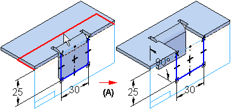
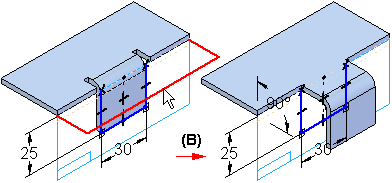
Flanges along non-tab linear edges
While working in the ordered environment, you can now construct flanges on non-tab linear edges such as contour flange edges,
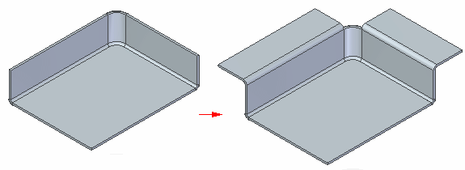
bend edges,
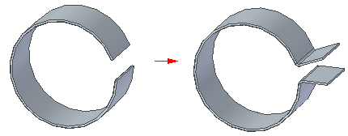
and dimple edges.
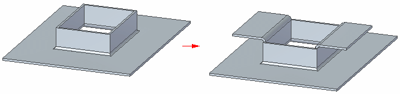
When creating a flange along a linear bend edge
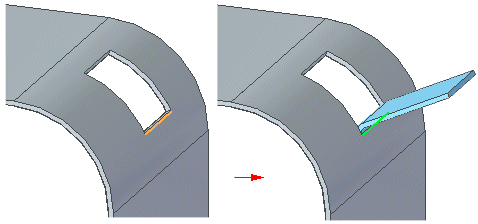
only the Bend Outside option is available so the flange and bend are created on the outside of the profile plane. Also, only the system defined reliefs are supported so the relief related controls on the Flange Options dialog box are disabled.
Complex flanges
In the ordered environment, you can construct a more complex flange by editing the profile of a simple flange.
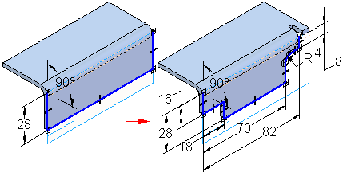
Editing the flange profile
-
To edit the profile of a flange, select the flange and then click the Profile Step button on the Flange command bar.
Constructing the new profile
-
To make it simpler to construct the new profile properly, two additional dashed lines are displayed along with the default flange profile: a connect line (A) and a construction line (B).
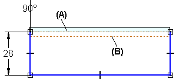
The connect line is used to connect the ends of the flange profile to the part edge from which the flange originates. The connect line (A) and the construction line (B) define an area that must not be intersected by arcs (C) that are part of the new profile. If you use an arc as part of the new profile, it can touch the construction line, but it cannot fall inside the area between the connect line and construction line. The end segments of the new profile must be lines and they must touch or extend past the construction line.
Disconnecting the original profile
-
Depending on the modifications you want to make, you might need to disconnect the original profile from the connect line. For example, you would need to delete the Connect relationship if you want to modify the flange length to be shorter than the length of the edge it is connected to. To disconnect the profile, delete the Connect relationship at the end of the profile you want to modify.
Finishing the profile
-
After you have finished constructing the new profile, the end segments must be re-connected to the connect line with a Connect relationship. You can apply the relationship yourself or you can let the system re-connect the end segments for you.
If you want the system to apply the Connect relationship for you, the end segment (A) must cross the connect line (B).
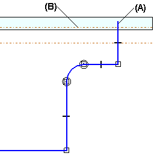
When you click the Return button, the system trims the end segment and applies the Connect relationship (A).
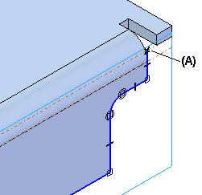
If you apply the Connect relationship yourself, be careful to apply it to the connect line and not the part edge. Zoom in to be sure. If you apply the connect relationship to the part edge and not the connect line, when you finish the profile a message will describe the problem so you can fix it.
Matching flange faces in the ordered environment
There are two ways to match the orientation of a flange face to a target face. When constructing a new flange with the Flange command, while in the Offset step, you can use the Match Face button on the Flange command bar to match the flange to a target face. For an existing flange, use the Match Flange Face command to match flange faces.
The workflow for matching flange faces is the same for methods.
-
Select the flange face you want to match.
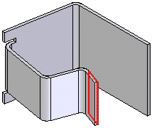
-
Select a target face and enter an offset value if you want the faces to be offset.
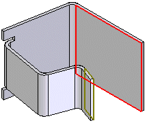
-
If you entered an offset value, click to indicate the offset direction.
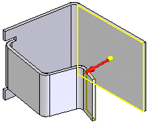
-
Click Finish to match the faces.
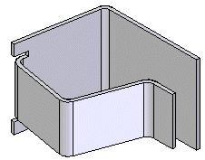
Selecting a target face
-
When matching a flange face, the target face can be a face within the same sheet metal part,
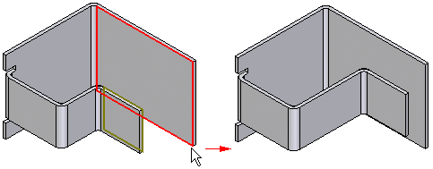
A face on another part,
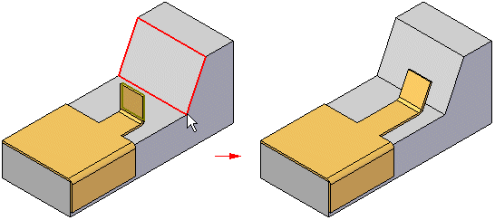
Or, a reference plane.
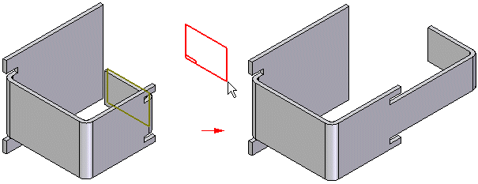
When matching a face to another part in an assembly, you must use the Inter-Part Copy command to copy the target face into the active document first.
Inserting bends
You can also construct flanges with the Bend command. For example, you may need to add a flange where the width of the flange is defined by existing cutouts (A).
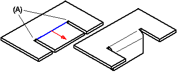
The profile for a bend feature must be a single linear element.
How do I
Construct a flangeLook up more details
Flange commandFlange command bar
Flange Options dialog box
Multi-Edge Flange command bar
Multi-Edge Flange Options dialog box
General tab (Multi-Edge Flange Options dialog box)
Miters and Corners tab (Multi-Edge Flange Options dialog box)